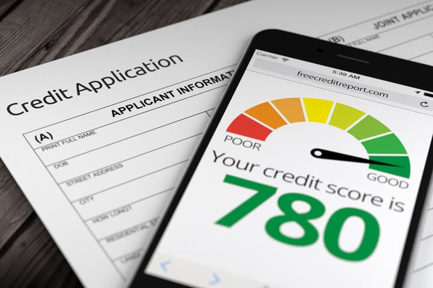
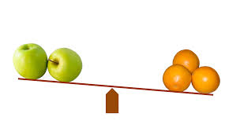

-
1. Determine Your Loan Needs
- Before applying for a loan, take some time to assess how much money you need and what you'll use it for. This will help you choose the right loan type and amount. -

2. Check Your Credit Score
- Your credit score plays a key role in loan approval. A higher score can qualify you for better interest rates. You can check your credit score for free online through various services. -

3. Compare Lenders
- Research various lenders to compare interest rates, terms, and conditions. Look at both traditional banks and online lenders to find the best deal. -
4. Review Loan Terms
- If approved, the lender will offer you a loan with specific terms. Review the interest rate, repayment schedule, and any fees. Make sure you understand all the conditions before accepting the loan. -
5. Accept the Loan
- If you’re satisfied with the loan terms, sign the agreement. The funds will usually be deposited into your bank account within a few days. -
 6. Repay the Loan
6. Repay the Loan
- Make timely payments according to the agreed-upon schedule. Setting up automatic payments can help ensure you don’t miss any payments and avoid late fees.
Getting a loan doesn’t have to be complicated. By following these simple steps, you can secure the funds you need quickly and easily. Just remember to borrow responsibly and only take out a loan you can afford to repay.